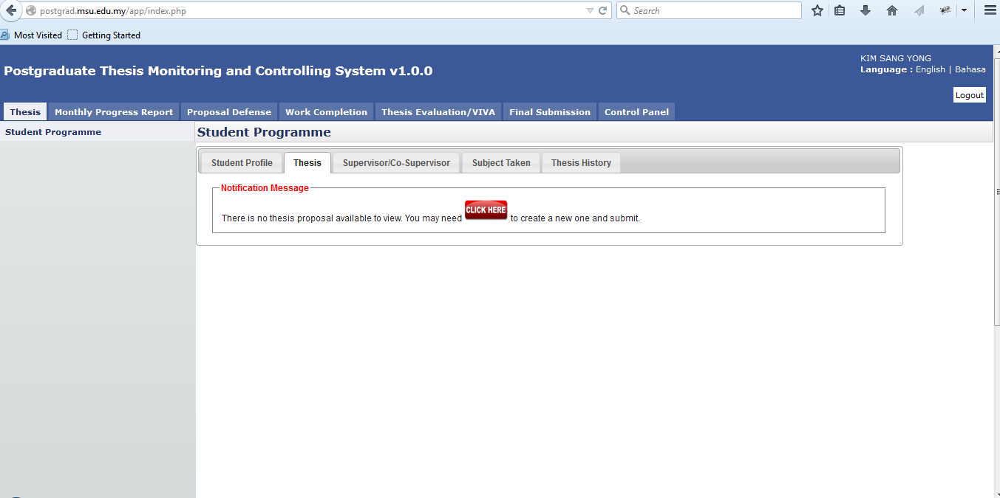
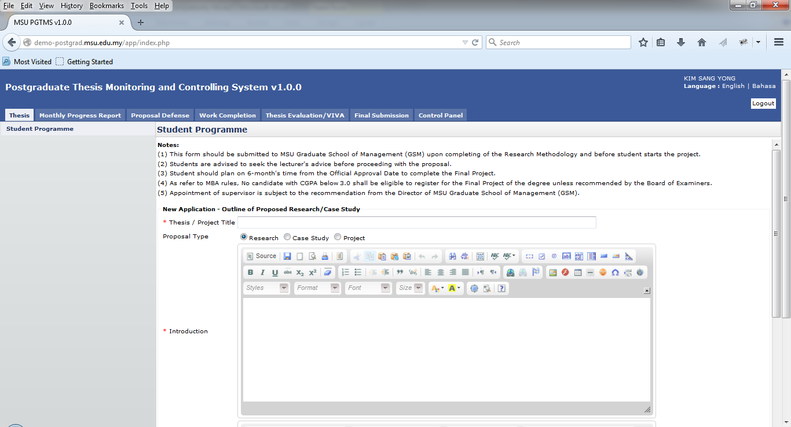
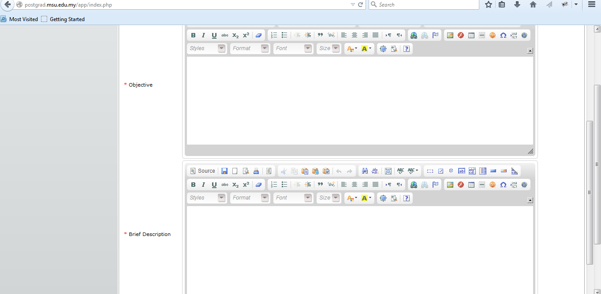
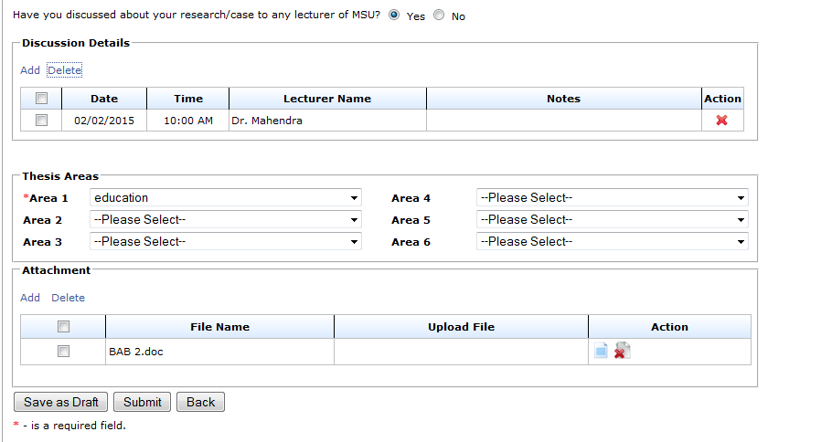
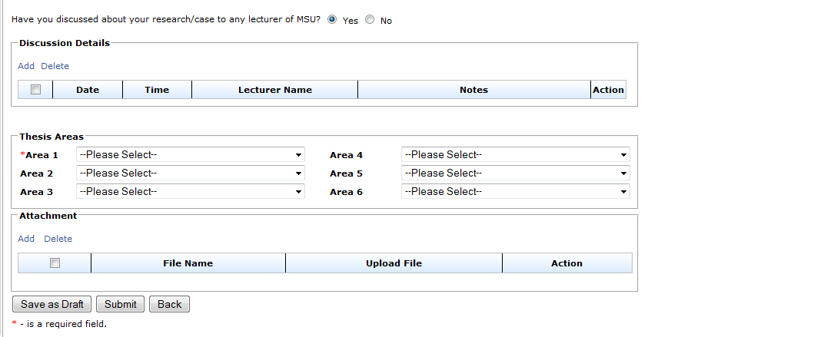
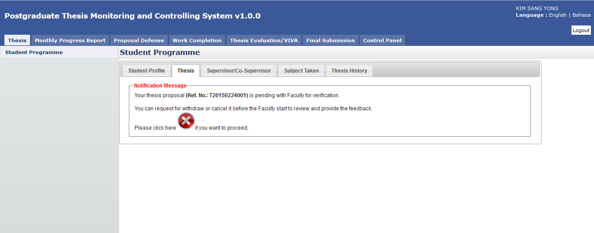

First Time
When first time login to the system, the user will see the message from the system as shown in the figure below asking for proposal preparation and submission to the Faculty.

Figure 9: First Time Proposal Preparation
Steps:-
- Click on the Thesis Tab on the Top Panel.
- System will show the message to prepare and submit the proposal.
- Click on the Click Here button to create the proposal.

Figure 20: New Proposal Page
- Enter the Thesis / Project Title
- Select Proposal Type
- Enter the necessary description into the Introduction

Figure 11: New Proposal Page – Next Section
- Enter the necessary description into the Objective
- Enter the necessary description into the Brief Description

Figure 13: New Proposal Page – Next Section
- By default it will be set as ‘Yes’ for the discussion with the MSU’s lecturer. The meeting date and its detail can be added via Add button.
- At least 1 Thesis Areas need to be selected for Faculty to select and assign the right and suitable supervisor/co-supervisor to consult with the student.
- The student also can input as many attachments to support the thesis proposal.

Figure 14: New Proposal Page – Next Section
- After all the necessary information has been provided, the student can save it temporarily via Save as Draft button in case there is a need to be reviewed and updated later. Once finalize, it can be submitted to the Faculty and Senate for approval and becomes a thesis.
- Click Back button if to return back to Student Programme page.
- If the proposal has been finalized and ready to submit for approval, the student can send it to Faculty via Submit button. Any changes cannot be done until the proposal is returned back by Faculty due to any changes needed.

Figure 15: New Proposal Page – After submission
- After submit, system will notify student that their proposal has been successfully submitted to the Faculty for approval.
- If the student has changed his/her mind to withdraw or cancel the newly submitted proposal, he/she can do that via cancel button as shown above. Please refer next section on how to cancel the proposal.
Created with the Personal Edition of HelpNDoc: Free EPub producer